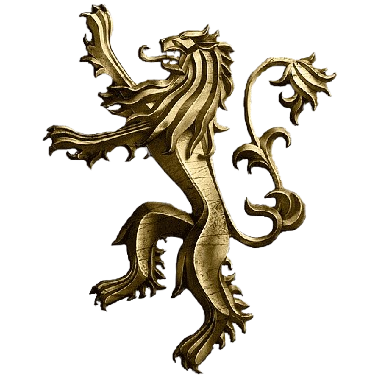
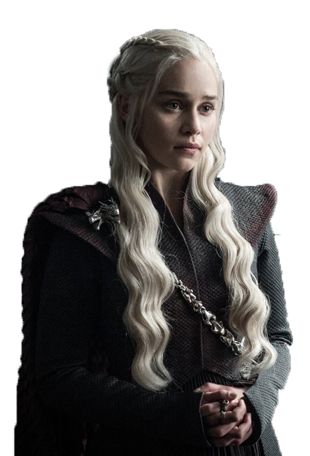

Jon Snow

Jon Snow, one of the most iconic characters in Game of Thrones, is
portrayed by Kit Harington. Raised as the illegitimate son of Eddard
Stark at Winterfell, Jon grew up facing stigma and isolation. He
joined the Night's Watch, where he proved himself to be a natural
leader and formidable fighter. Secretly, Jon is the son of Lyanna
Stark and Rhaegar Targaryen, making him the legitimate heir to the
Iron Throne, a twist that changes the power dynamics in Westeros. His
loyalty, sense of justice, and leadership were tested through numerous
challenges, including battles against the White Walkers and his
complicated relationship with Daenerys Targaryen. Jon’s ultimate
decision to sacrifice personal desires for the greater good defined
his story.
Jamie Lannister

Jaime Lannister, played by Nikolaj Coster-Waldau, is a complex figure
in Game of Thrones. Known as the "Kingslayer," he earned infamy for
killing King Aerys II Targaryen, an act seen as both treachery and
heroism. As a skilled knight and member of the Kingsguard, Jaime's
life was marked by loyalty to his powerful family, House Lannister. He
has a complicated relationship with his twin sister, Cersei, which
leads to moral conflicts and divided loyalties. Initially portrayed as
arrogant and ruthless, Jaime’s character evolves, especially after his
capture and interaction with Brienne of Tarth, revealing his honor and
vulnerability. His internal struggle between familial duty and
personal redemption forms a pivotal arc throughout the series,
culminating in a tragic end.
Daenerys Targaryen

Daenerys Targaryen, portrayed by Emilia Clarke, is a powerful and
determined figure in Game of Thrones. The last surviving Targaryen
heir, she begins her journey in exile, sold into marriage by her
brother Viserys. However, Daenerys evolves from a timid, oppressed
girl into the formidable "Mother of Dragons." She hatches three
dragons, reclaiming a legacy unseen for centuries and using them to
assert her claim as a ruler. Daenerys is driven by a vision of justice
and a desire to break the chains of oppression, earning loyalty from
diverse followers across Essos. However, her ambition and belief in
her destiny push her toward increasingly ruthless decisions,
culminating in the dramatic and destructive conquest of King’s
Landing, highlighting her complex transformation from liberator to
feared conqueror.
Tyrion Lannister
Tyrion Lannister, played by Peter Dinklage, is a fan-favorite
character in Game of Thrones known for his sharp wit, intellect, and
deep humanity. As the youngest son of Tywin Lannister, Tyrion is often
marginalized due to his stature, facing ridicule and underestimation.
Despite this, he navigates the treacherous politics of Westeros with
cunning and humor. Tyrion's character is defined by his love of books
and strategy, a stark contrast to his family's brutal power plays. He
forms unexpected alliances, such as with Daenerys Targaryen, and acts
as her Hand, showcasing his loyalty and shrewdness. While he is
flawed, struggling with vices and family conflicts, Tyrion’s journey
is one of resilience and redemption, proving himself as one of the
most complex and resourceful figures in the series.
Arya Stark
Arya Stark, portrayed by Maisie Williams, is one of the most dynamic
characters in Game of Thrones. As the youngest daughter of Eddard and
Catelyn Stark, Arya defies traditional gender roles, favoring
swordplay over needlework. Her journey begins with a fierce
independence that grows as she witnesses the brutal execution of her
father and the collapse of her family’s power. Arya’s path takes her
through hardship and training with the Faceless Men in Braavos, where
she becomes a skilled assassin. This training sharpens her resolve and
hones her stealth and combat abilities. Driven by a desire for justice
and revenge, Arya's list of enemies fuels her actions.
Tormund Giantsbane
Tormund Giantsbane, played by Kristofer Hivju, is a charismatic and
fierce Wildling leader in Game of Thrones. Known for his
larger-than-life personality and formidable combat skills, Tormund is
deeply loyal to his people and fights passionately for their survival
beyond the Wall. Initially an enemy of the Night’s Watch, he
eventually becomes an ally of Jon Snow, recognizing Jon’s efforts to
unite disparate groups against the greater threat of the White
Walkers. Tormund's sense of humor and bold demeanor make him a
standout character, often providing levity in tense moments. His
fascination with Brienne of Tarth adds a touch of endearing comedy to
his rugged character. Tormund’s story reflects themes of loyalty,
survival, and the blending of old rivalries in the face of a common
enemy.
Petyr Bailish
Petyr Baelish, known as Littlefinger and played by Aidan Gillen, is a
cunning and ambitious character in Game of Thrones. A master
manipulator, Petyr rose from humble beginnings as the son of a minor
lord to become one of the most influential figures in Westeros.
Serving as the Master of Coin on King Robert Baratheon’s Small
Council, he wielded power through strategic alliances and deceit.
Petyr’s hallmark is his ability to sow chaos, famously stating, "Chaos
is a ladder." He is driven by personal ambition and an unrequited love
for Catelyn Stark, which motivates many of his actions. Littlefinger's
schemes were pivotal in sparking conflict between powerful houses.